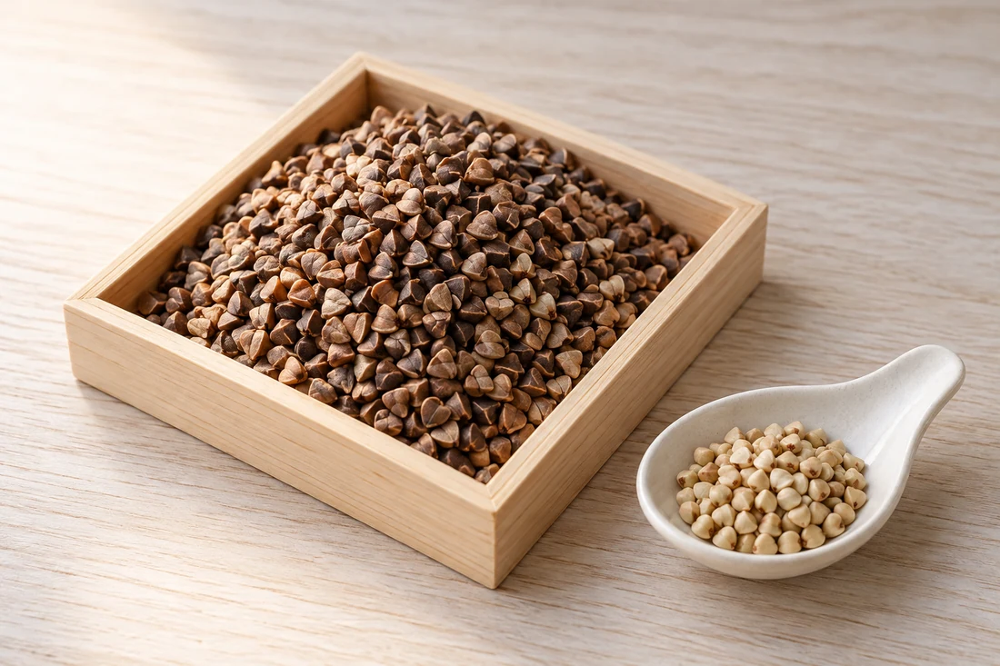
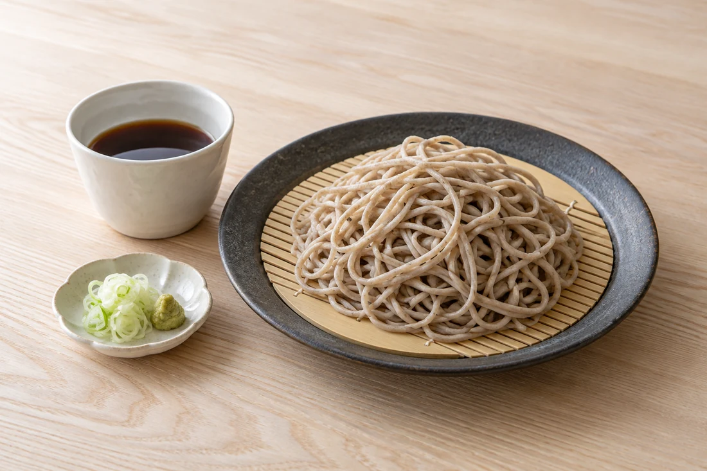
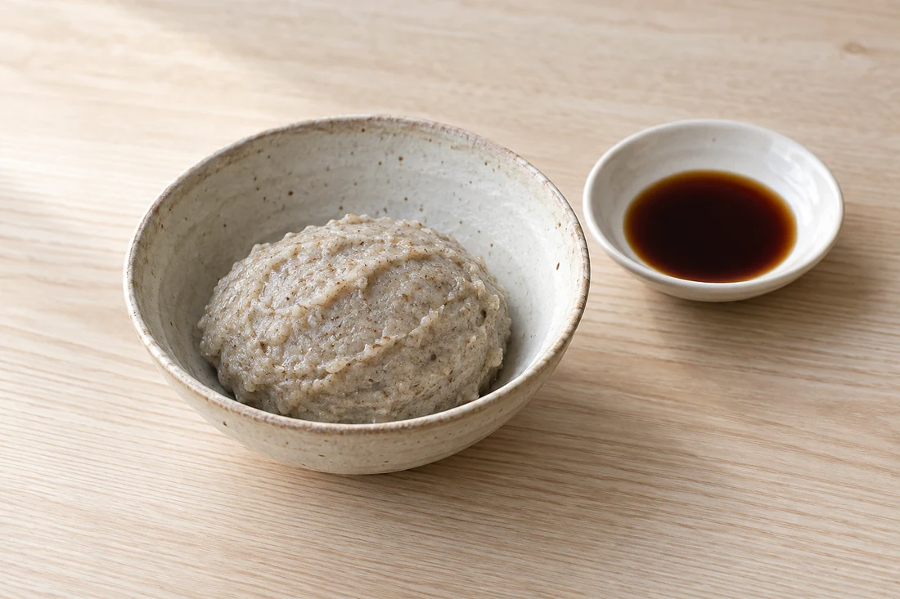

はじまりは、原料から。
山形の「でわかおり」、北海道の「摩周」など。
産地や品種の個性を、粉選びの入口に。
山形・滑川の、そば粉専門工場。
目指す香りも、食感も、一人ひとり違うから。
原料と碾き方から、あなたの蕎麦へ。
そば粉の購入・ご相談を承ります。
家庭のそば打ちから、そば店・製麺のご相談まで。
01 粉づくりと、粉選び。
そば粉は、どれも同じではありません。
色、粒度、ホシの入り方。
つくりたい蕎麦に合う粉を、一緒に考えます。
粉づくりの引き出し
石臼・ロール・胴搗・金属臼など、さまざまな製粉機の特徴を生かした製品づくり。鈴木製粉所は、お客様のニーズに応じた多種少量のそば粉づくりを目指しています。
02 そば粉を選ぶ
「社長のお勧めそば粉」から、
二つのそば粉をご紹介します。
雪室で貯蔵した原料を、石臼で丁寧に。
すっきりとした、甘い風味を楽しむそば粉です。
1,728円（税込）
送料別。送料・在庫・お届け条件は商品ページでご確認ください。
公式ショップで商品を見る北海道・弟子屈町の摩周地区で育った原料。
細かく石臼挽きした、キタワセソバのそば粉です。
1,858円（税込）
送料別。送料・在庫・お届け条件は商品ページでご確認ください。
公式ショップで商品を見る価格は公式オンラインショップの掲載価格です。商品内容・価格は変更になる場合があります。工場での取り扱い・在庫・価格は、お電話でお問い合わせください。
工場で選びたい方へ
でわかおり、さらしな、田舎、摩周など。
つくりたい蕎麦やご用途を伺い、粉選びをご案内します。
03 そば粉の使い方
そば打ちはもちろん、麺以外にも。
そば粉を使った、食卓の楽しみ方をご紹介。

粉に水を合わせ、こね、のし、切る。
自分で打つ一枚に、粉選びの楽しさが生まれます。

そば粉を練って、やわらかなひと口へ。
山形では「かいもち」とも呼ばれる食べ方です。
薄く焼いた生地に、好きな具材を。
いつものそば粉を、違う表情で味わって。
04 滑川から、そばの未来へ。
明治41年創業
鈴木製粉所は、山形市を拠点とする
そば粉の専門工場です。
原料を保存し、碾きたての粉を届けるために。
その場所として選んだのが、山あいの滑川でした。
経験から学び、サイエンスの視点も重ねながら。
多様なそば粉づくりを通して、
そばをつくる人と、食べる人をつないでいきます。
05 購入・ご相談
ご家庭用も、お店で使うそば粉も。
ご用途・ご希望の量・気になる特徴をお伝えください。
電話受付のご案内：9:00–12:00 ／ 13:00–17:00
公式のお問い合わせページそばを使用した製品を取り扱っています。食物アレルギーのある方は、ご購入・ご使用前に原材料等をご確認ください。
定番商品は工場で販売しています。ご希望のそば粉や量、在庫について、事前にお電話でご確認いただくとスムーズです。
そば店や製麺などの用途もご相談ください。原料・碾き方・粒度など、ご希望を伺います。注文量や納品条件は個別にお問い合わせください。
見学・体験の実施状況、受付方法、日時・料金等については、ご来訪前に滑川工場へお電話でご確認ください。
そば打ち・そばがき・ガレットは、そば粉の使い方のご紹介です。滑川工場ではそば粉の製造・販売を行っています。
土・日、年末年始・お盆などは休業です。祝日や臨時休業、駐車場所・利用条件は、ご来訪前にお電話でお問い合わせください。
06 工場案内・アクセス
そば粉の購入、ご相談に。
ご来訪前のお電話をおすすめします。
株式会社 鈴木製粉所
営業時間・休業日は変更になる場合があります。
見学・体験の受付状況も、事前にご確認ください。
地図を開いて、現在地からの経路をご確認いただけます。
一粒から、あなたの蕎麦へ。